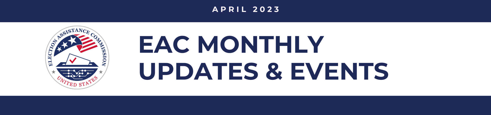
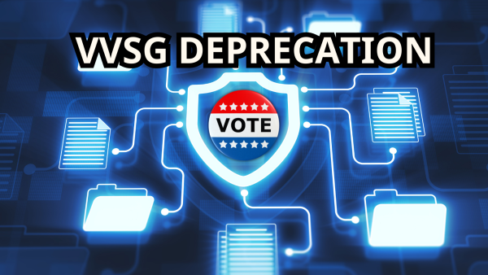

In this edition of the newsletter, we’re excited to feature:
- Six New EAC Resources for Election Officials!
- List Maintenance Public Meeting Recap
- Upcoming EAC Events:
- April 18-19: Standards Board Annual Meeting
- April 25-26: Board of Advisors Annual Meeting
- April 26: EAC Public Meeting "Supporting Military Voters”
- EAC Chairwoman Christy McCormick Hosts Women's History Month Virtual Panel
NEW EAC RESOURCES ALERT!
Voluntary Voting System Guidelines (VVSG) Deprecation

The EAC is committed to supporting election officials’ needs with the upcoming deprecation of the Voluntary Voting System Guidelines (VVSG) 1.0 and 1.1.
The following resources are now available on the EAC’s website and featured on the homepage.
-
Secure Elections Toolkit - The Secure Elections Toolkit, and its accompanying materials, are intended to assist election officials when informing candidates, policymakers, media, stakeholders, and the public of the multi-layered approach used to secure elections. This includes how to share information about election security in their jurisdictions and components of the EAC Testing and Certification program. Download customizable social media graphics via Canva.com.
-
EAC Testing and Certification Factsheet – The printable EAC Testing and Certification Factsheet explains the purpose of the EAC’s national voluntary voting system certification program and what it means for voting systems to be certified by the EAC. This can be used as a reference or as a resource to share with external audiences about depreciation and the EAC’s Testing and Certification program.
Election Management Guidelines
The EAC has updated the Election Management Guidelines (EMG)! New and experienced election officials can use the EMG to reference election processes and best practices. From the foundations of election office administration to the final steps of certifying the ballot counts, the EMG is designed to be accessible to election officials at all levels, regardless of their jurisdiction size or resources. Each of the 19 chapters in the EMG has been vetted by local and state election officials and other stakeholders.
EAC Equipment Disposal Resource Checklist
.png)
As election jurisdictions procure new election technologies, they often need to dispose of outdated election equipment. It is essential to do this safely and in ways that limit opportunities for malicious entities to take advantage of the situation. If election equipment falls into the wrong hands, it not only jeopardizes the security and integrity of the jurisdiction that owned the equipment, but also the security and integrity of every other election jurisdiction that uses the same or similar equipment.
The EAC has developed a Disposal of Election Equipment resource to support this effort. This includes best practices on:
- Chain of Custody and Inventory Control
- Voting Technology Purchased with HAVA Funds
- Disposal and Destruction of Election Equipment
- Election Equipment Disposal Checklist
EAC and URI Polling Place Line Alleviation Simulation Video Series

This new simulation video series is intended to help election officials develop strategies for alleviating long lines at polling places. The simulations in this series explore different strategies based on voting processes, available resources, and voter arrival patterns. Through eight video simulations, election officials will be able to visualize how these strategies may work in practice at a voting location. Watch the simulations here.
The EAC partnered with the University of Rhode Island (URI) to use simulation technology to replicate common Election Day issues. More information on this project and for information on the first simulation series on polling place consolidation visit the EAC’s website.
To provide additional context to the video series, EAC Commissioner Donald Palmer interviewed Gretchen Macht from the University of Rhode Island to discuss how election officials can use the SMILE election processes video simulations series.
Voter Lists Webpage: Registration, Confidentiality, And Voter List Maintenance
Keeping voter registration lists up to date is a continual process that includes adding new eligible voters, updating voter registration information when a voter moves, and removing ineligible voters. To help with this critical task, the EAC has developed a new webpage for election officials with best practices on:
- Voter Registration
- Voter Roll Confidentiality
- Voter List Maintenance
This webpage includes a Best Practices Voter List Maintenance resource, which is intended to help election officials improve the quality of voter registration data. In addition to this resource, the EAC has released a fact sheet and a toolkit to support election officials with voter list maintenance.
Best Practices: Public Records Requests
Since the 2020 election cycle, election officials have reported increased public records requests, requiring time and resources added to their official duties of administering elections. To help election officials navigate the high volume of these requests, the EAC has developed Best Practices: Public Records Requests. This document highlights innovative methods election offices have used to respond to these requests efficiently.
EAC Commissioners Ben Hovland and Donald Palmer Testify before Committee on House Administration
"Election officials, voting system manufacturers, and voters have a trusted partner in the EAC. Together, we must work to improve elections at all levels of government and ensure that issues like those that occurred in Luzerne County do not happen again." -Commissioner Palmer
"Election observers who are properly trained and abide by the rules in their jurisdictions are needed, and encouraged, in order to maintain transparency and accountability in our elections." - Commissioner Hovland.
EAC Holds Virtual Public Meeting on List Maintenance
On March 15, the EAC held a virtual public meeting on official voter list accuracy and list maintenance. One of the many requirements of the Help America Vote Act (HAVA) is for states to create and maintain a computerized state list of registered voters that will interact with other state data sources and coordinate with voter records from all jurisdictions across the state. The panelists discussed how different jurisdictions manage voter list maintenance, the challenges they face, and best practices.
The EAC Commissioners heard from the Honorable Michael G. Adams, Kentucky Secretary of State; Monica Evans, the Executive Director of the District of Columbia Board of Elections; and Neal Kelley, the Former Registrar of Voters, Orange County, California. The Executive Director of the Electronic Registration Information Center (ERIC), Shane Hamlin, also participated in the panel.
The meeting included a presentation on a new Best Practices Voter List Maintenance resource from the EAC’s Sara Brady, Senior Election Subject Matter Expert.
If you missed it, the live stream recording of the public meeting is available on the EAC’s YouTube channel.
SAVE THE DATE!
Attend the Standards Board 2023 Annual Meeting on April 18-19
The EAC’s Standards Board will host an in-person public meeting on April 18-19, 2023, at the Hyatt Regency Phoenix in Arizona. During the meeting, board members will hold discussions on the Voluntary Voting System Guidelines (VVSG) 2.0, and the EAC’s Voluntary Electronic Poll Book (EPB) pilot program, as well as discuss ongoing EAC programs, and address election official security and mental health concerns.
The Standards Board consists of 55 state election officials selected by their respective chief state election official and 55 local election officials selected through a process supervised by the chief state election official.
Register to attend this event in person and learn more on the meeting event page. Please note that this meeting will not be live streamed.
Join the Board of Advisors 2023 Annual Meeting on April 25-26
The EAC’s Board of Advisors will host an in-person public meeting on April 25-26, 2023, at the Fairmont Washington, DC Georgetown. During the meeting, board members will hold discussions on the Voluntary Voting System Guidelines (VVSG) 2.0 and the EAC’s Voluntary Electronic Poll Book (EPB) pilot program, discuss ongoing EAC programs, and hear from a panel on election official security and mental health concerns. They will also hear discussions on election audits, public records requests, and the impacts of the National Voter Registration Act (NVRA) and the Help America Vote Act (HAVA).
The Board of Advisors is a 35-member board composed of representatives from various EAC stakeholder associations, federal government agencies, and Congress.
Register to attend this event in person and learn more on the meeting event page.
Attend the EAC’s April 26 Public Meeting on Supporting Military Voters
On April 26, 2023, please join the EAC for a public discussion on serving military and UOCAVA voters starting at 1 p.m. E.T. This event will be held in the agency’s hearing room at 633 3rd Street NW, Washington, DC 20001. It will also be live streamed on the EAC's YouTube Channel.
Register to attend this event in person and learn more on the event’s webpage. Please only register if planning to attend in person.
Women’s History Month 2023 Virtual Panel Video and Blog Post

Photo Credit: NPS
This year, the EAC recognized Women’s History Month by exploring key moments that led to women’s suffrage and the ratification of the 19th Amendment. In a new video, EAC Chairwoman Christy McCormick had the opportunity to talk with Donald Stanko, the Lead Park Ranger for the History of Women’s Rights National Historical Park in Seneca Falls, New York, where the first Women’s Rights Convention took place, to learn more about the suffrage movement and the museum.
Chairwoman McCormick was also joined by Susan Philpott, a Park Ranger at the Belmont-Paul Women’s Equality National Monument in Washington, D.C., a house that served as the headquarters of the National Woman's Party for over 90 years and was designated a national monument in 2016. The house also served as a hub of civic engagement that led to the ratification of the 19th Amendment.
Watch this virtual discussion on EAC’s YouTube channel and learn more by reading this EAC blog post: Fighting For Women’s Suffrage: What Today’s Voters Can Learn from Civic Leaders of the Past.